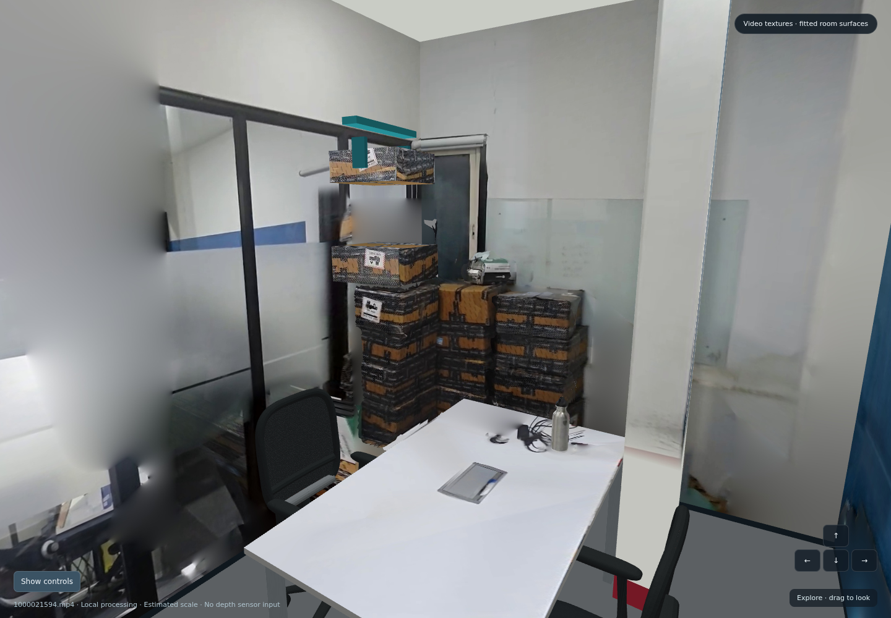

01 / INTERACTIVE ENVIRONMENT
First office
Walk through the textured office, orbit the room, and select, move or lift the bottle and carton. Reset the view and objects at any time.
Explore office ↗Original fitted office environment; kinematic object controls and estimated scale.